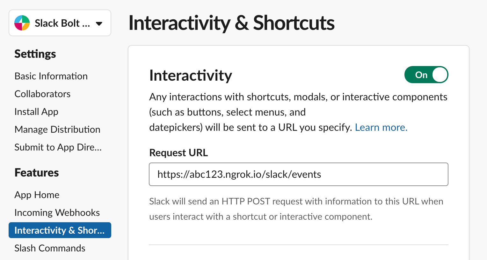
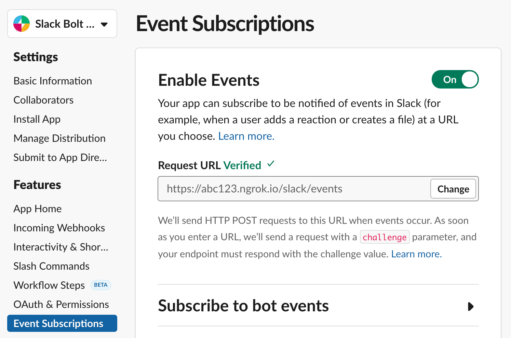

このガイドでは、Bolt for JavaScriptとHeroku プラットフォームを使ってSlack アプリを用意して、デプロイするまでの手順を説明します。全体の流れとしては、Bolt Slack アプリをダウンロードし、Heroku 用の準備を済ませ、デプロイする流れになります。
Heroku へのデプロイ
この手順を全て終わらせたら、あなたはきっと️⚡️getting-started-with-herokuのサンプルアプリを動作させたり、それに変更を加えたり、自分のアプリを作ったりすることができるようになるでしょう。
Bolt Slack アプリを入手する
Bolt アプリを作るのが初めてという場合は、まずBolt 入門ガイドに沿って進めてみましょう。または、以下のテンプレートアプリをクローンしてもよいでしょう。
1
git clone https://github.com/slackapi/bolt-js-getting-started-app.git
ダウンロードしたBolt アプリのディレクトリに移動します。
1
cd bolt-js-getting-started-app/
次に、このアプリをHeroku で動かすための準備をします。
アプリをHeroku で動かすための準備する
Heroku は、作ったアプリをホストできる柔軟性の高いプラットフォームで、少し設定が必要です。このセクションでは、Bolt アプリに変更を加え、Heroku に対応させます。
1. Git リポジトリを使用する
Heroku にアプリをデプロイするには、まずGit リポジトリが必要です。まだGit を使ったことがない場合は、Git をインストールし、Git リポジトリを作成します
💡 前のセクションで
git cloneを使用した場合、Git リポジトリはすでに存在しますので、この手順はスキップできます
2. Procfile を追加する
Heroku アプリでは、必ずProcfileという専用のファイルが必要です。このファイルを使ってHeroku にアプリの起動方法を伝えます。Bolt Slack アプリは、公開されたWeb アドレスを持つWeb サーバーとして起動します。
アプリのルートディレクトリに、拡張子なしのProcfileという名前のファイルを作成し、次の内容を貼りつけます。内容はどのようにアプリを動かすかによって変わります。
デフォルトでは Bolt アプリは公開された Web アドレスを持つ Web サーバーとして起動するので、以下のように指定します：
1
web: node app.js
ソケットモードを使ったアプリをデプロイするときは、ポートをリッスンしない worker として起動します：
1
worker: node app.js
ファイルを保存したら、ローカルのGit リポジトリにコミットします。
1
2
git add Procfile
git commit -m "Add Procfile"
💡 既存のBolt アプリを使ってこのガイドに沿って進めている場合は、Preparing a Codebase for Heroku Deploymentのガイドを参考に、適切なポートをリッスンするようにしてください。
Heroku ツールをセットアップする
ローカルマシンでHeroku ツールのセットアップを行います。このツールは、Heroku プラットフォームを使用するアプリの管理、デプロイ、デバッグを行う場合に便利です。
1. Heroku CLI をインストールする
Heroku ツールは、コマンドラインインターフェイス（CLI）の形で提供されています。さっそくmacOS、Windows、Linux 用のHeroku CLIをインストールしましょう。macOS では次のコマンドを実行します。
1
brew install heroku/brew/heroku
インストールが完了したら、Heroku CLI を試してみましょう。どのようなコマンドが使えるかを一覧表示してみます。
1
heroku help
💡
herokuコマンドが見つからない場合は、パスを更新するため新しいターミナルセッションまたはターミナルタブを開いてください。
2. Heroku CLI にログインする
Heroku CLI では、ローカルマシンからHeroku アカウントに接続します。無料のHeroku アカウントを新規登録して、次のコマンドでHeroku CLI にログインします。
1
heroku login
💡 ファイアウォールを使っている場合、Heroku CLI で使用されるプロキシ環境変数の設定が必要なことがあります。
3. Heroku CLI へのログインが成功したか確認する
ログインできたかどうか確認しましょう。次のコマンドを実行すると、Heroku CLI に現在接続されているアカウント名が表示されます。
1
heroku auth:whoami
これでHeroku ツールのセットアップが完了しました。それではHeroku アプリの作成の本編に進みましょう。
Heroku アプリを作成する
先ほどインストールしたツールを使って、Heroku アプリを作成します。アプリを作成するときは、ユニークな名前を自分で指定するか、ランダムな名前を生成することができます。
💡 Heroku アプリはあとから名前を変更することもできますが、リモートのGit アドレスとパブリックのWeb アドレスも変更になります。
1. Heroku アプリを作成する
ユニークな名前を指定してHeroku アプリを作成します。
1
heroku create my-unique-bolt-app-name
または、ランダムな名前を楽しむならこちらで。
1
2
3
heroku create
# Creating sharp-rain-871... done, stack is heroku-18
# https://sharp-rain-871.herokuapp.com/ | https://git.heroku.com/sharp-rain-871.git
Heroku アプリが作成されると、いくつかの情報が表示されます。これらの情報は次のセクションで使用します。この例では、次のようになります。
- アプリ名:
sharp-rain-871 - Web アドレス:
https://sharp-rain-871.herokuapp.com/ - 空のリモートGit リポジトリ:
https://git.heroku.com/sharp-rain-871.git
2. Heroku のリモートGit リポジトリを確認する
Heroku CLI は、自動的にherokuという名前のリモートGit リポジトリをローカルに追加します。リモートGit リポジトリを一覧して、herokuが存在することを確認しましょう。
1
2
3
git remote -v
# heroku https://git.heroku.com/sharp-rain-871.git (fetch)
# heroku https://git.heroku.com/sharp-rain-871.git (push)
3. アプリをデプロイする
Slack アプリの認証情報をHeroku アプリに設定します。
1
2
heroku config:set SLACK_SIGNING_SECRET=<your-signing-secret>
heroku config:set SLACK_BOT_TOKEN=xoxb-<your-bot-token>
💡 認証情報の入手場所がわからない場合、Bolt 入門ガイドで署名シークレットとトークンのエクスポートについて参照してください。
ローカルでのアプリの準備と、Heroku アプリの作成が完了しました。次のステップは、デプロイです。
アプリをデプロイする
アプリをデプロイするため、ローカルのコードをHeroku にプッシュします。その後Slack アプリの設定を更新し、Heroku アプリに”hello” と声をかけてみましょう。 ✨
1. Heroku にアプリをデプロイする
Heroku へのアプリのデプロイには、通常git pushコマンドを使用します。これにより、ローカルリポジトリのコードがリモートのherokuリポジトリにプッシュされます。
次のコマンドでアプリをデプロイしましょう。
1
git push heroku main
Heroku でデプロイされるのは、master またはmain ブランチのコードです。それ以外のブランチにプッシュした場合、デプロイ処理はトリガーされません
💡 Heroku deploys code that’s pushed to the master or main branches. Pushing to other branches will not trigger a deployment.
最後に、Heroku CLI を使ってWeb サーバーインスタンスを起動します。
1
heroku ps:scale web=1
2. Slack アプリの設定を更新する
次に、Heroku のWeb アドレスをリクエストURL に指定し、Slack からのイベントやアクションがこのURL に送信されるようにします。
次のコマンドを使ってHeroku のWeb アドレスを取得します。
1
2
3
heroku info
# ...
# Web URL: https://sharp-rain-871.herokuapp.com/
この例では、https://sharp-rain-871.herokuapp.com/がWeb アドレスとなります。
Slack アプリのページを開き、アプリ名を選択します。次に、リクエストURLを自分で確認したWeb アドレスに変更します。設定する場所は2 か所あります。
💡 リクエストURL の末尾は
/slack/eventsです。例えばhttps://sharp-rain-871.herokuapp.com/slack/eventsのようになります。
つ目の場所は、サイドパネルの「Interactivity & Shortcuts」です。これを選択し、リクエストURLを更新します。

2 つ目の場所は、サイドパネルの「Event Subscriptions」です。これを選択し、リクエストURLを更新します。

💡 無料プランで使用するHeroku アプリは、非アクティブな状態が続くとスリープします。💤 認証が失敗した場合、すぐに再試行してみてください。
3. Slack アプリをテストする
アプリのデプロイが完了し、Slack の設定変更も行いました。アプリを試してみましょう。
アプリが参加しているSlack チャンネルを開き、半角の小文字で”hello” と書き込みます。Bolt 入門ガイドのとおり、アプリから応答があるはずです。応答がない場合、リクエストURLを確認し、もう一度試してください。
変更をデプロイする
Slack アプリを構築するなかで、変更を加えてデプロイする必要があります。一般的な流れでは、変更を加え、コミットし、Heroku にプッシュするという順番です。
この流れをつかむため、アプリが”goodbye” というメッセージに応答するように変更を加えてみましょう。次のコードをapp.js に追加します（GitHub のソースコードはこちら）。
1
2
3
4
5
// "goodbye" が含まれるメッセージの着信をリッスン
app.message('goodbye', async ({ message, say }) => {
// say() で、イベントがトリガーされたチャンネルにメッセージを送信する
await say(`See ya later, <@${message.user}> :wave:`);
});
変更内容をローカルのGit リポジトリにコミットします。
1
git commit -am "ユーザーに'goodbye' を返す"
変更内容をリモートのherokuリポジトリにプッシュし、デプロイします。
1
git push heroku main
デプロイ処理が完了したら、アプリが参加しているSlack チャンネルを開き、半角の小文字で”goodbye” と書き込みます。Slack アプリから、さよならの挨拶が返ってくるはずです。
次のステップ
これではじめて️⚡Bolt for JavaScript アプリをHerokuへデプロイすることに成功しました。🚀
基本的なアプリのデプロイができましたので、次はアプリのカスタマイズやモニタリングを行う方法を調べてみましょう。おすすめのステップをいくつか紹介します。
- How Heroku Worksを読んでHeroku の動作の理解を深めたり、Heroku アプリを無料で使う場合の制限をチェックしたりする。
- Bolt の基本的な概念を参考にしてアプリを拡張したり、Heroku Add-onsをアプリに取り入れたりする
- Bolt の応用コンセプトでログの表示について学習し、Heroku でのログメッセージの確認方法を把握する。
- Heroku アプリのスケール方法に従って、アクセスの増加に対処する。